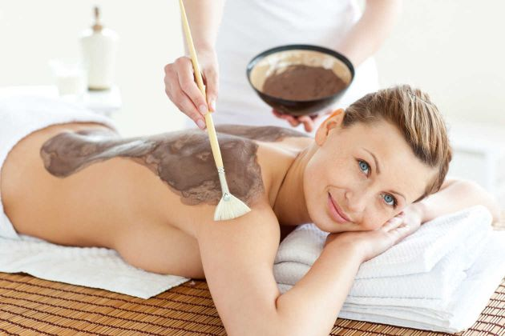

Spa y Cuidado de la Piel
Terapia Reductora
Es un tratamiento natural que consiste en ablandar, remover y disolver la grasa dura adherida a la piel y compactadas a los músculos, por medio de estimulación acupuntural, en trayectos específicos abdominales que permiten la ruptura del adipocito (célula grasa), este rocedimiento se realiza con equipos especiales que emiten impulsos electromagnéticos para obtener el resultado ya mencionado.

Geoterapia
Es un masaje que drena el líquido acumulado en los miembros inferiores, sobre todo las piernas, y estos líquidos contribuye al aumento de la celulitis y la hinchazón y con suave y delicada y muy sabroso, que maniobra elimina nodos ubicados en ingle, axila, pierna, ya que bombea toxinas y el agua acumulada pueda salir con facilidad, que alivia el peso de las piernas y los pies y trata y previene un aspecto de las ondas de la celulitis, también se utiliza para combatir la hinchazón causada por la cirugía plástica
Hidratación Facial
El tratamiento hidratante que realizamos, tiene 3 propiedades importantes: Utiliza aguas milenarias, provenientes de glaciares de la zona austral de Chile, produce una hidratación a 3 niveles: profundo, medio y superficial, con el objetivo de regular y equilibrar el contenido acuoso de la piel, incrementa los reservatorios de agua en la piel en condiciones extremas de temperatura.